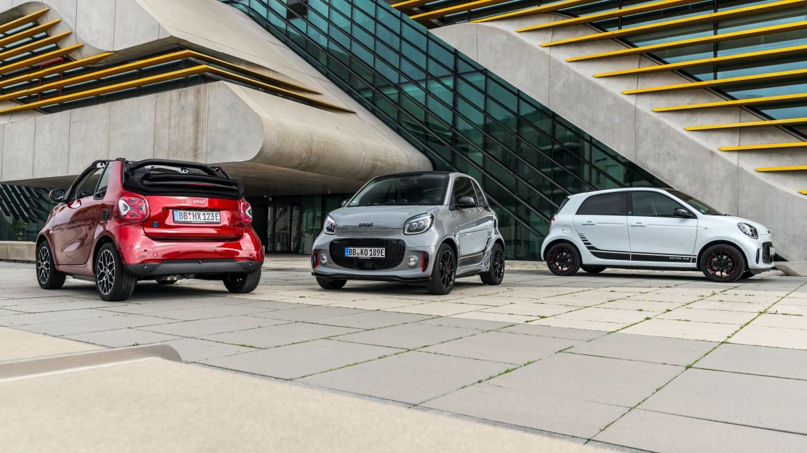
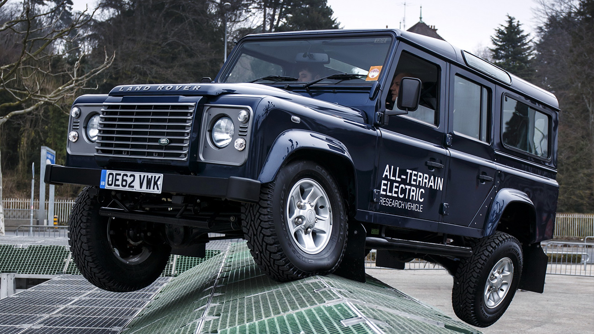
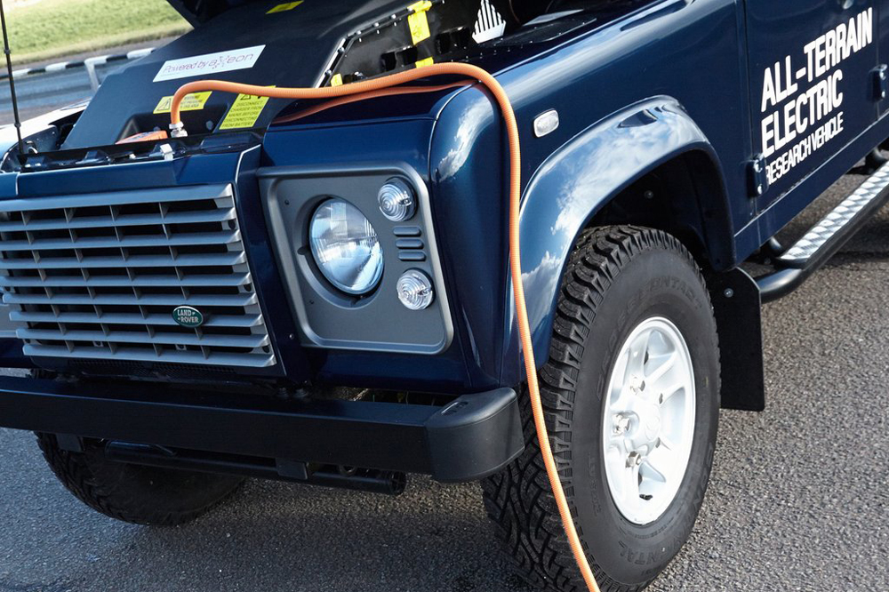
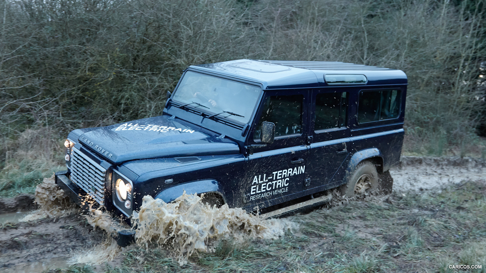

В 2025 году в странах Евросоюза начнёт действовать экологический стандарт «Евро-7». И хотя его требования всё ещё обсуждаются, эксперты практически уверены в том, что после вступления документа в силу новых автомобилей без электрических надстроек к силовым агрегатам практически не останется. В связи с этим рассказываем, когда большие автобренды отправят бензиновые и дизельные моторы в собственные музеи и на свалки.
На самом деле уже сейчас есть автопроизводители, которые полностью отказались от ДВС и перешли на электродвигатели. Речь о компании Smart — там запустили процесс масштабного «озеленения» ещё пару лет назад. Причём прошёл он максимально стремительно, и сегодня новый микрокар можно купить только с электрическим мотором. При этом электрические Смарты не сильно отличаются от автомобилей, на которые ставили бензиновые моторы. Однако новые модели совсем не за горами, а в их разработке помогут китайцы из Geely: эта компания владеет Смартом пополам с концерном Daimler.И небольшие компании готовы меняться куда быстрее корпораций. До конца текущего года планирует электрифицироваться даже британский Lotus (который, к слову, тоже имеет непосредственное отношение к Geely): гиперкар Evija, представленный в 2019 году, в 2021-м наконец-то должен пойти в производство.
На самом деле уже сейчас есть автопроизводители, которые полностью отказались от ДВС и перешли на электродвигатели. Речь о компании Smart — там запустили процесс масштабного «озеленения» ещё пару лет назад. Причём прошёл он максимально стремительно, и сегодня новый микрокар можно купить только с электрическим мотором. При этом электрические Смарты не сильно отличаются от автомобилей, на которые ставили бензиновые моторы. Однако новые модели совсем не за горами, а в их разработке помогут китайцы из Geely: эта компания владеет Смартом пополам с концерном Daimler.И небольшие компании готовы меняться куда быстрее корпораций. До конца текущего года планирует электрифицироваться даже британский Lotus (который, к слову, тоже имеет непосредственное отношение к Geely): гиперкар Evija, представленный в 2019 году, в 2021-м наконец-то должен пойти в производство.
Грандиозные планы на 2024 год у Land Rover.
Через три года модельный ряд компании должен пополнить первый массовый электрокар — им станет Range Rover пятого поколения. Хотя бензиновую версию нового Рэйнджа собираются показать до конца 2021-го.
 

И хотя полноценный электрокар в Land Rover созреет лишь через три года, эксперименты с «зелёными» машинами британцы начали уже давно. Ещё на Женевском автосалоне 2013 года был представлен прототип полностью электрического Дефендера. Тогда компания хотела оценить, как электромоторы будут чувствовать себя в условиях экстремального бездорожья. Новый вариант классического внедорожника оснащен 70-киловаттным (94 л.с.) электромотором с крутящим моментом 330 Нм. Питание обеспечивает 300-вольтная литий-ионная аккумуляторная батарея емкостью 27 кВт-ч и весом 410 кг, установленная в передней части вместо дизельного двигателя. Снаряженная масса автомобиля стала на 100 кг больше по сравнению с базовой версией Defender 110 и варьируется от 2055 кг до 2162 кг в зависимости от типа кузова (пикап, жесткий верх или универсал). Все основные элементы электрического силового привода, включая аккумулятор, инвертор и мотор, имеют воздушное охлаждение.
Запас хода внедорожника составляет более 80 км. При обычной медленной езде по бездорожью заряд держится до восьми часов. Аккумулятор можно полностью зарядить с помощью устройства экспресс-зарядки мощностью 7 кВт за четыре часа либо за 10 часов с помощью зарядного устройства мощностью 3 кВт.
Система рекуперативного торможения настроена так, что позволяет мотору вырабатывать 30 кВт электричества при движении автомобиля под уклон.Поскольку электромотор обеспечивает максимальный крутящий момент с начальных оборотов, коробка передач заменена одноступенчатым редуктором с передаточным числом 2,7, который объединяется с
существующей системой полного привода Defender, в которой сохранилась блокировка дифференциала. В автомобиле также используется модифицированная версия системы адаптации к дорожным условиям Terrain Response.Система рекуперативного торможения настроена так, что позволяет мотору вырабатывать 30 кВт электричества при движении автомобиля под уклон.
SIGN UP NOW